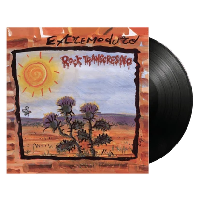
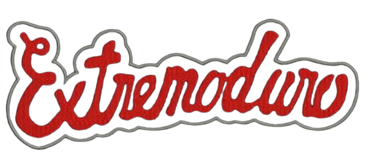
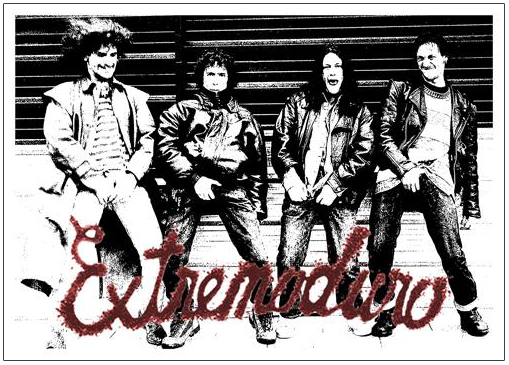
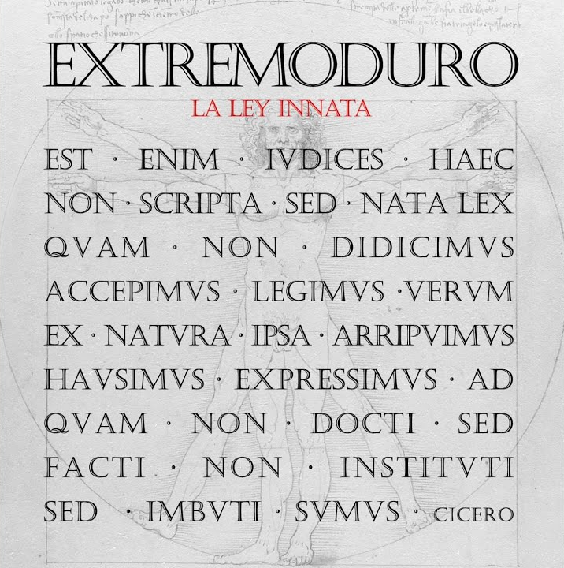
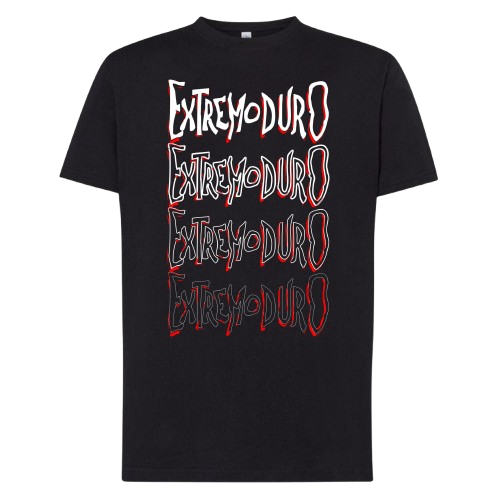

Reedició en vinil
Els discos clàssics tornen a una edició limitada amb portada restaurada.


Rock transgressiu des de Plasència. Lletres sense filtre i guitarres a tot volum.
Escoltar discografia
Àlbum · 2008
Un disc ambiciós, amb una producció més elaborada i lletres que van del que és íntim al que és salvatge. Una bona porta dentrada al so més madur del grup.
Veure el disc
Els discos clàssics tornen a una edició limitada amb portada restaurada.


Samarretes, pegats i xapes amb el logotip del grup